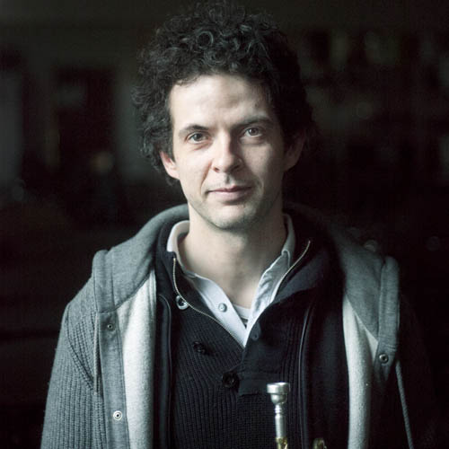

Een orkest vol niet-professionele muzikanten met de ambitie om de grotere symfonische werken te brengen.
Van Mozart tot Mahler, van Brucker tot Brahms. Allemaal fantastische componisten met werken die ondanks hun leeftijd blijven aanspreken. Ook als amateur kan je hiervan meeproeven door mee te spelen met Sonores.

Joeri Van hove
DirigentElke zaterdagochtend wordt er gerepeteerd van 9h30 tem 12h30 in de muziekschool te Evergem, Hofbilkstraat. Gratis parking en goed bereikbaar via openbaar vervoer vanuit Gent via tram 1.
| Datum | Doelgroep | Beschrijving |
|---|---|---|
| zat 27/10 | iedereen | inclusief oprichtingsvergadering omstreeks 12u |
| Zat 3/11 | enkel blazers | intussen worden de boogstreken voor de strijkers vastgelegd door de aanvoerders |
| Zat 10/11 | 9u30: Alt/Cello/Contrabas 11:00: tutti |
|
| Zat 17/11 | tutti | |
| Zat 24/11 | tutti | vrijhouden voor repetitie met gastdirigent |
| Zat 01/12 | geen repetitie | |
| Zat 08/12 | tutti | vrijhouden voor repetitie met gastdirigent |
| Zat 15/12 | tutti | |
| Zat 22/12 | tutti | |
| Zat 29/12 | geen repetitie | |
| Zat 5/1 | 9u30: Viool 1 11u: tutti |
|
| Zat 12/1 | tutti | volledige dag, 9u30-16u30 |
| Zat 19/1 | tutti | volledige dag, 9u30-16u30 |
| Zat 26/11 | 18u: raccord 20u: concert |
Huidige programmatie 2018-2019
Wolfgang Amadeus Mozart - Ouverture uit Figaro, K.492
Claude Debussy - Petite Suite, L 65
Franz Schubert - Symfonie nr. 3 in D, D. 200
Antonin Dvorak - Czech Suite in D, op. 39
Johannes Brahms - Variaties op een thema van Haydn, op. 56
Claude Debussy - Petite Suite, L 65
Franz Schubert - Symfonie nr. 3 in D, D. 200
Antonin Dvorak - Czech Suite in D, op. 39
Johannes Brahms - Variaties op een thema van Haydn, op. 56
Muzikanten gezocht!
Sonores is nog op zoek naar enthousiaste muzikanten om zijn rangen te versterken.
Vooral Viool, Hoorn, Fagot & Trombone!